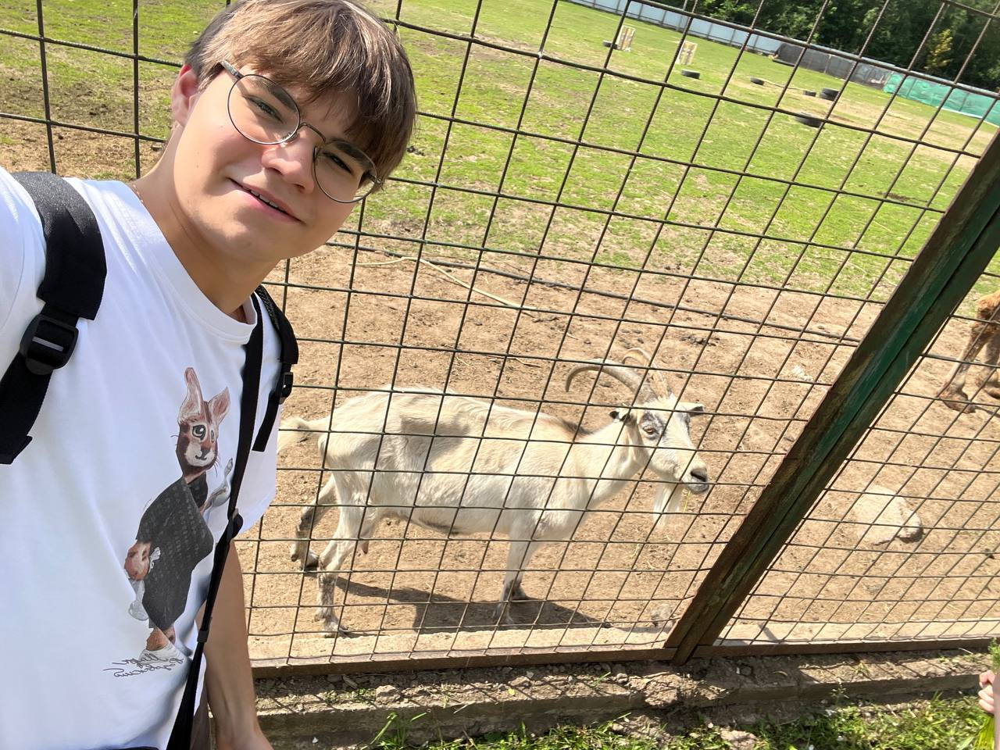

Кто я
Меня зовут Артём. С детства кино для меня было чем-то особенным: сначала мы всей семьёй пересматривали любимые комедии, а позже я стал сам искать что-то новое. Так я открыл для себя драмы, триллеры и фантастику, и понял, что фильмы могут не только развлекать, но и расширять мои представления о мире..
Мой путь к киноману
Со временем я перестал смотреть фильмы лишь ради развлечения. Я начал обращать внимание на то, как снимают сцены, подбирают музыку, как актёры передают эмоции. Теперь каждый просмотр — это не просто отдых, а возможность понять, почему история работает именно так и что делает её особенной.
Почему этот сайт?
Я решил создать этот сайт, чтобы поделиться своими любимыми фильмами и мыслями о них. Хочется рассказать о картинах, которые меня зацепили, и, может быть, помочь кому-то найти фильм, который станет для него особенным..